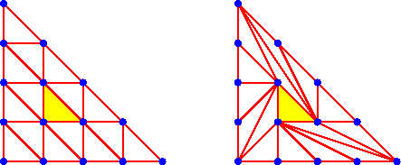

Next: 2.ii.c. Polyhedral Homotopy Algorithm
Up: 2.ii Polyhedral Homotopy Algorithm: Table
of Contents
Previous: 2.ii.a. A Simplex System
2.ii.b. Regular Triangulations
The combinatorial structure underlying the homotopy algorithm of
Huber and Sturmfels is that of a regular triangulation, which
is a special case of a regular subdivision.
A regular subdivision Pw of a lattice polytope
P is given by a lifting function
w : Lattice Points in P
----> Q ,
(the rational numbers)
as follows.
Set
Q := Convex hull { (a,w(a)
| a is an integral point in P}
(a subset of Rn+1).
This lifted polytope Q has distinguished lower facets, those facets
whose inward pointing normal vector has positive last coordinate.
Forgetting the last coordinate projects these lower facets into
Rn (and hence P).
Their totality gives the regular subdivision
Pw of P.
When all the integral lattice points in P lift to vertices of
lower facets of Q, and these lower facets are all simplices, then
Pw is a regular triangulation of P.
In Figure 2 the triangulation on the left is
regular and the triangulation on the right is not regular.
Consider a hypothetical lifting function w for the triangulation on the
right.
We assume that w takes the value 0 at the three interior vertices.
The clockwise neighbour of any vertex of the big triangle must be lifted
higher than that vertex.
(Consider the figure they form with the parallel edge of the
interior triangle.)
Since the edge of the big triangle is lifted to a concave broken path,
this implies that each vertex is lower than its clockwise neighbour,
which is impossible, except in some M.C. Escher woodcuts.
|  |
| Figure 2:
Regular and non-regular triangulations |
Next: 2.ii.c. Polyhedral Homotopy Algorithm
Up: 2.ii Polyhedral Homotopy Algorithm: Table
of Contents
Previous: 2.ii.a. A Simplex System